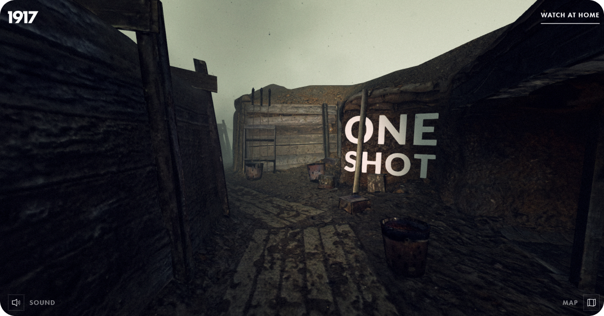

UX/UI дизайн
Hard/Soft skills UX/UI дизайнера
Hard skills – это профессиональные, технические навыки. Soft skills – это умение выстраивать рабочие процессы, оценивать свои возможности и работать в команде.
Hard skills
1. Основы дизайна
Это базовый hard skill, который служит фундаментом для всех остальных профессиональных навыков дизайнера.
1. Композиция:
- Понимание принципов построения композиции (баланс, иерархия, симметрия/асимметрия)
- Умение грамотно размещать и компоновать элементы на плоскости или в пространстве
- Знание приемов создания визуального фокуса и управления вниманием
2.Цветоведение:
- Знание цветовых моделей (RGB, CMYK, HSB) и их применения
- Понимание психологического и эмоционального воздействия цвета
- Умение создавать гармоничные и контрастные цветовые сочетания
3.Типографика:
- Знание основных типографических терминов и принципов работы с текстом
- Понимание роли шрифта в создании визуального стиля
- Умение подбирать и комбинировать различные гарнитуры шрифтов
4.Визуальная иерархия:
- Понимание принципов построения визуальных акцентов и приоритетов
- Умение создавать четкую структуру и ранжирование информации
- Знание способов визуального управления вниманием пользователя
2. UX/UI
Ключевой hard skill UX/UI-дизайнера – это умение создавать по-настоящему удобные и понятные интерфейсы. Здесь важно не забывать, что "сперва удобно, а потом красиво".
Это значит, что в первую очередь необходимо сфокусироваться на потребностях и задачах пользователя, а не на эстетической составляющей. Дизайнер должен держать в голове весь пользовательский путь, а не работать в отрыве от продукта, "в вакууме".
Важный аспект – создание интерактивных и отзывчивых интерфейсов. Это не просто "дизайн без дизайна", а грамотное использование анимаций, микровзаимодействий и визуальной обратной связи. Все это улучшает юзабилити и делает продукт более приятным в использовании.
3. Продуктовый подход
Ключевой навык эффективного UX/UI-дизайнера – это не просто "красивый дизайн", а аналитический подход и глубокое понимание целевой аудитории продукта.
Хороший дизайнер начинает свою работу с тщательного изучения потребностей пользователей, их целей и боли. Он использует методы "Jobs to be Done", чтобы понять, зачем люди обращаются к продукту и какие задачи они хотят решить.
Опираясь на эти инсайты, дизайнер создает персоны и продумывает различные сценарии их взаимодействия с интерфейсом. Он также изучает Customer Journey Map, чтобы видеть весь путь пользователя и точки его пересечения с продуктом.
Далее, используя аналитические данные, дизайнер может выдвигать обоснованные гипотезы о том, какие дизайн-решения могут улучшить ключевые метрики продукта. Он проверяет эти гипотезы как качественными (интервью, наблюдения), так и количественными (A/B-тесты) методами.
Важно, что дизайнер также учитывает и ограничения, с которыми ему придется работать — технологические, бизнес-требования, временные рамки и т.д. Это позволяет создавать продукты, которые не только решают проблемы пользователей, но и вписываются в реальные условия.
4. Визуальные коммуникации
1. Гайдлайны и фирменный стиль:
- Умение формулировать и документировать дизайн-гайдлайны бренда
- Знание принципов построения целостной визуальной идентичности
2. Единый брендинг на различных платформах:
- Умение сохранять одинаковый стиль и стиль общения бренда на сайте, мобильном приложении и в соцсетях
3. Шаблонизация и автоматизация:
- Умение создавать гибкие, масштабируемые шаблоны и системы дизайн-компонентов
- Знание инструментов для автоматизации рутинных задач (ресайзинг, генерация иконок и т.д.)
Кроме того, сильный UX/UI-дизайнер должен обладать навыком мышления историями и знанием, как эффективно их рассказывать.
5. Брифинг
Важно уметь выходить за пределы простых "хотелок" заказчика и фокусироваться на реальных потребностях пользователей и бизнес-целях.
Дизайнер должен уметь:
1. Получать от заказчика не просто набор поверхностных идей, а четкое понимание проблемы, которую нужно решить
2. Расширять и переформулировать исходную задачу, глубже погружаясь в суть
3. Выявлять неочевидные, "неозвученные" потребности пользователей
4. Учитывать боли и задачи бизнеса, а не только делать "красивый макет"
Важно также, чтобы в ходе брифинга дизайнер четко согласовывал с заказчиком KPI (ключевые показатели эффективности), по которым в дальнейшем будет оцениваться успешность дизайн-решения.
Soft skills
1. Креативность и нестандартное мышление
Креативность – это способность генерировать оригинальные идеи и находить инновационные решения для поставленных задач.
Как креативность проявляется в работе веб-дизайнера:
1. Генерация идей:
- Использование методик мозгового штурма, ассоциативного мышления для выработки свежих концепций
- Умение "выйти за рамки" привычных подходов и взглянуть на проблему под новым углом
2. Цветоведение:
- Знание цветовых моделей (RGB, CMYK, HSB) и их применения
- Понимание психологического и эмоционального воздействия цвета
- Умение создавать гармоничные и контрастные цветовые сочетания
3. Типографика:
- Знание основных типографических терминов и принципов работы с текстом
- Понимание роли шрифта в создании визуального стиля
- Умение подбирать и комбинировать различные гарнитуры шрифтов
4. Визуальная иерархия:
- Понимание принципов построения визуальных акцентов и приоритетов
- Умение создавать четкую структуру и ранжирование информации
- Знание способов визуального управления вниманием пользователя

Скриншот сайта1917: In the Trenches
Сайт Into the Trenches: 1917, посвященный одному из лучших военных фильмов всех времен, также является одним из лучших веб-сайтов с 360-градусным дополнением к реальности. Любители кино могут прогуляться по съемочной площадке и осмотреть ее в полном объеме, не выходя из дома.
2. Коммуникативные навыки
Коммуникативные навыки необходимы веб-дизайнеру на всех этапах проекта — от начальных обсуждений до финальной презентации.
1. Понимание потребностей заказчика:
- Умение выслушать и эффективно собрать требования, пожелания и цели заказчика
- Способность задавать правильные вопросы, чтобы уточнить и прояснить все детали
2. Презентация и объяснение решений:
- Навык четко и убедительно презентовать свои дизайн-концепции
- Умение доступно объяснить логику и обоснованность предлагаемых решений
3. Активное слушание и обратная связь:
- Готовность внимательно выслушивать обратную связь от заказчика
- Способность воспринимать критику конструктивно и принимать предложения
4. Согласование и компромиссы:
- Умение находить компромиссы, балансируя между идеями дизайнера и пожеланиями заказчика
- Навык аргументированно отстаивать важные для дизайна решения
5. Вовлечение и сотрудничество:
- Способность вовлекать заказчика в процесс, поощряя его активность и идеи
- Готовность к тесному сотрудничеству и совместной работе над продуктом
Развитие этих навыков требует постоянной практики, тренировки навыков презентации, активного слушания и ведения переговоров.
3. Эмпатия и ориентация на пользователя
Дизайнер, обладающий эмпатией, видит "картину" глазами пользователей, понимает их боли и мотивацию. Это помогает предвидеть их потребности, избегать типичных проблем и разрабатывать эффективные, ориентированные на человека решения.
1. Эмпатия к пользователям:
- Способность понимать и чувствовать, что испытывают люди, взаимодействующие с дизайном
- Умение поставить себя на место пользователя, увидеть ситуацию его глазами
2. Ориентация на потребности пользователей:
- Фокусировка на том, чего хотят и чего ожидают пользователи
- Выявление и понимание пользовательских целей, задач, болевых точек
3. Наблюдение и исследование:
- Сбор данных о поведении, привычках и предпочтениях пользователей
- Анализ обратной связи, тестирование прототипов, полевые исследования
4. Создание "user personas":
- Разработка детальных профилей/образов целевых пользователей
- Использование этих персон для проектирования дизайна, ориентированного на них
5. Итеративное совершенствование:
- Постоянное тестирование, сбор отзывов и улучшение дизайна
- Готовность пересматривать и адаптировать решения с учетом пользовательских нужд
4. Гибкость и адаптивность
1. Готовность к изменениям:
- Способность быстро реагировать на возникающие изменения в требованиях, тенденциях, технологиях
- Умение пересматривать и перестраивать дизайн-решения при необходимости
2. Открытость к обратной связи:
- Готовность принимать конструктивную критику и вносить коррективы
- Умение воспринимать новые идеи и предложения от команды, заказчика, пользователей
3. Итеративный подход:
- Применение методологий итеративной разработки, постоянное тестирование и улучшение дизайна
- Способность разбивать проект на этапы и последовательно двигаться к финальному результату
4. Освоение новых инструментов:
- Готовность к изучению и использованию современных дизайн-инструментов, технологий
- Умение быстро осваивать новые программные средства и методики
5. Междисциплинарное взаимодействие:
- Способность эффективно коммуницировать и сотрудничать с другими специалистами
- Понимание общих бизнес-целей и умение встраивать дизайн в командную работу
5. Управление временем и приоритетами
1. Планирование и расстановка приоритетов:
- Умение структурировать задачи по степени важности и срочности
- Способность эффективно распределять время и ресурсы на выполнение разных этапов проекта
2. Постановка целей и создание планов:
- Навык формулировать четкие, измеримые цели для каждого этапа работы
- Умение разрабатывать подробные, реалистичные планы для достижения этих целей
3. Соблюдение сроков и поддержание темпа:
- Способность работать в рамках установленных дедлайнов и графиков
- Поддержание высокой продуктивности, чтобы не отставать от плана
4. Управление рабочей нагрузкой:
- Умение определять оптимальную интенсивность труда и режим отдыха
- Навык эффективно распределять внимание и ресурсы между различными задачами
5. Гибкая реакция на изменения:
- Готовность пересматривать планы и адаптировать их в случае возникновения непредвиденных обстоятельств
- Способность перераспределять приоритеты и перестраивать процессы при необходимости
6. Любознательность и стремление к обучению
1. Любознательность:
- Интерес к новым тенденциям, технологиям и методикам в дизайне и веб-разработке
- Желание исследовать, экспериментировать и выходить за рамки привычного
2. Открытость к новому:
- Готовность пробовать и осваивать инновационные инструменты, приемы и подходы
- Восприимчивость к креативным и нестандартным идеям
3. Саморазвитие и самообразование:
- Ответственность за непрерывное повышение своей квалификации
- Активный поиск возможностей для обучения (онлайн-курсы, книги, конференции)
4. Изучение лучших практик:
- Отслеживание тенденций и примеров выдающихся дизайнерских решений
- Анализ и понимание того, что делает их эффективными
5. Применение полученных знаний:
- Способность быстро внедрять новые навыки и методики в свою работу
- Умение находить креативные способы применения полученных знаний
Итоги
Hard Skills
1. Дизайнерские принципы. Знание основ цветовой теории, композиции и типографики для создания эстетически привлекательных интерфейсов.
2. Инструменты дизайна. Умение работать с такими программами, как Figma, Sketch и Adobe XD для проектирования интерфейсов и прототипов.
3. Прототипирование и wireframing. Способность разрабатывать каркасные модели и интерактивные прототипы для тестирования идей.
4. Исследование пользователей. Навыки проведения интервью, опросов и юзабилити-тестирования для выявления потребностей пользователей.
Soft Skills
1. Эффективная коммуникация. Умение четко объяснять идеи и конструктивно принимать обратную связь от коллег и клиентов.
2. Эмпатия. Способность понимать и учитывать эмоции и потребности пользователей в процессе проектирования.
3. Критическое мышление. Умение анализировать информацию, выявлять проблемы и находить оптимальные решения.
4. Гибкость. Способность адаптироваться к изменениям, учиться новому и переходить к новым подходам по мере необходимости.
5. Командная работа. Умение сотрудничать с другими участниками проекта, включая дизайнеров, разработчиков и менеджеров, для достижения общих целей.
Практика
Hard Skills
Дизайн мобильного приложения
Спроектируй пользовательский интерфейс мобильного приложения для трекера привычек. Создай основные экраны (регистрация, главная страница, добавление привычек) и прототипы в Figma.
Проведение юзабилити-тестирования
Выбери существующий веб-сайт или приложение, проведи юзабилити-тестирование с несколькими пользователями, зафиксируй их взаимодействия и обсуди проблемы с удобством.
Анимация интерфейса
Создай анимации для взаимодействия пользователя с приложением (например, переходы между экранами, кнопки). Используй инструменты вроде After Effects или Figma.
Soft Skills
Создание пользовательских персонажей
Исследуй целевую аудиторию для своего проекта и создай 3-5 пользовательских персонажей с описанием их нужд и проблем.
Работа над эмоциональным дизайном
Выбери привычную задачу (например, покупка товара или запись на услугу) и создай сценарий, в котором учитываются эмоции и потребности пользователей.
Самоанализ
Напиши краткий отчет о собственных сильных и слабых сторонах в дизайне, а также о том, как планируешь развиваться в этих областях.